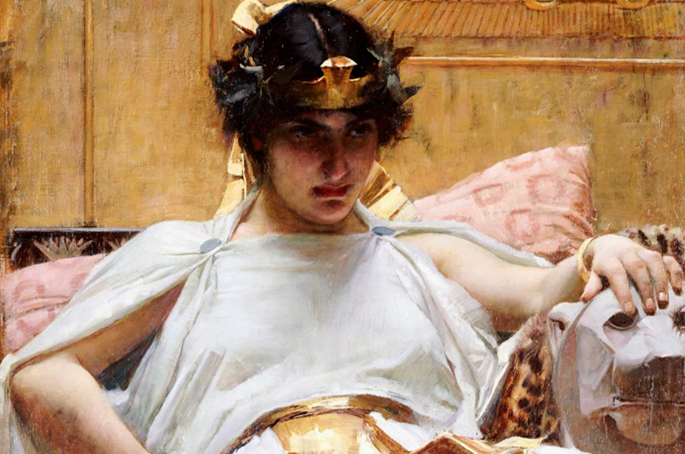

SNCT - Mulheres na Ciência
A Nossa Inspiração
Entenda os bastidores da nossa escolha e conheça a trajetória de duas mulheres extraordinárias.
A arqueóloga e ex advogada: Kathleen Martinez
Kathleen Martínez é uma arqueóloga dominicana e pesquisadora da National Geographic. Antes de seguir sua vocação para a arqueologia, atuou por quase 20 anos como advogada criminalista. Ela decidiu abdicar da carreira jurídica para se dedicar exclusivamente à busca pelo túmulo perdido da última faraó.
Martínez pesquisa o paradeiro de Cleópatra há cerca de 20 anos. Desafiou a teoria de que a rainha teria sido sepultada na área central da antiga Alexandria, sendo levada pela sua busca até Taposiris Magna, um templo esquecido a cerca de 48 km a oeste de Alexandria, na cidade costeira egípcia de Borg El Arab.
Uma das maiores descobertas de sua equipe foi um túnel monumental escavado na rocha a 13 metros de profundidade sob o templo. Com mais de 1,3 km de comprimento, a estrutura estende-se em direção ao litoral e leva-os a expandir as buscas para o ambiente marinho.
O achado do porto prova que Taposiris Magna não era um santuário isolado, mas sim um próspero centro de comércio marítimo e polo religioso. Isso reforça a tese de que a infraestrutura local, conectada ao templo por passagens subterrâneas, possuía relevância suficiente para abrigar a tumba real.
A expedição levou a descoberta que indicava que o templo em Taposiris Magna havia sido dedicado à deusa Ísis, uma ligação que tem significado, já que muitos consideravam Cleópatra uma encarnação viva de Ísis. Para Martínez, fazia sentido que a rainha quisesse que seu local de descanso final fosse no templo de Ísis, a deusa com a qual Cleópatra se identificava profundamente, destacando seu desejo em morrer como filha de Íris, não escrava e prisioneira.
Sabendo que os romanos destruíram as instalações reais em Alexandria, a rainha teria preparado um local secreto e sagrado fora da capital para descansar eternamente ao lado de Marco Antônio. Por ser o principal santuário dedicado a Ísis na região, o complexo de Taposiris Magna é apontado pela investigação como o local onde o casal teria sido escondido em câmaras protegidas pela própria geografia da época.

Quem foi Cleopátra, a dona da tumba que Martinez tanto procura?
Nascida do rei egípcio Ptolomeu 12 Auletes e de uma mãe desconhecida em 69 a.C., Cleópatra VII foi a última governante ativa da dinastia ptolomaica e a última faraó do Egito Antigo. Era reconhecida por seu intelecto e habilidade em tecer alianças políticas para manter a independência do Egito frente ao expansionismo romano. Embora tenha nascido em Alexandria, era culturalmente grega e tinha o grego como idioma nativo. Falava diversos idiomas e, ao contrário de outros membros de sua dinastia, aprendeu a falar a língua nativa egípcia.
Assumiu o trono em 51 a.C., após a morte do pai. Herdou um Egito endividado e sob ameaça de anexação romana. Para governar, casou-se forçadamente com seu irmão, Ptolomeu XIII. Devido à sua postura centralizadora, entrou em guerra contra o irmão e teve que fugir de Alexandria em 48 a.C.
Após aliar-se politicamente e romanticamente com Júlio César e ter com ele um filho chamado Cesarião e, mais tarde, com o general romano Marco Antônio, com quem gerou três filhos, a rainha viu seu reinado desmoronar com a derrota militar contra o governante romano Otávio em 31 a.C. Ameaçada de cativeiro pelos romanos, e para evitar o destino humilhante de ser capturada, Cleópatra tirou a própria vida aos 39 anos.
Kathleen enxerga Cleópatra não apenas como uma governante lendária, mas como uma mulher culta, destacando suas habilidades como diplomata, filósofa, médica, química e estrategista política, cuja memória e local de descanso merecem ser resgatados do esquecimento.

Afinal, por que Kathleen Martinez foi a nossa inspiração?
A escolha de Kathleen Martinez como principal inspiração para a protagonista do jogo representa a força e resiliência das mulheres na ciência, um campo em que a presença feminina ainda enfrenta apagamentos históricos e barreiras.
Como uma ex-advogada e arqueóloga, Kathleen adentrou um universo da arqueologia tradicional, historicamente dominado por homens e por visões eurocêntricas, com a própria estrutura acadêmica desacreditando suas hipóteses. Enfrentando o ceticismo, o preconceito de gênero e o descrédito inicial de colegas de profissão, ela insistiu em teorias fundamentadas e obteve autorizações inéditas para escavar no Egito, tornando-se uma referência ao liderar as buscas pela tumba de Cleópatra.
Escolhê-la como inspiração central significa destacar a importância da diversidade na produção de conhecimento. A história de Kathleen prova que o olhar feminino traz novas perspectivas para mistérios milenares, desafiando a lógica de quem decide quem pode produzir ciência. Ela personifica a coragem de ocupação de espaços hostis, tornando-se um símbolo de representatividade para as jovens cientistas e pesquisadoras.